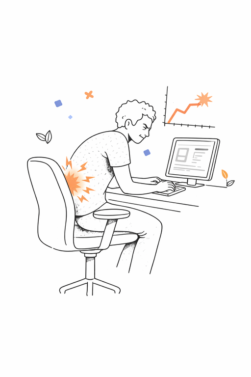

You won't feel it today. But the science is clear — and I ignored it.
Lower back pain when I sit. When I walk. When I try to sleep. It started quietly, and by the time I noticed, the damage was done.
The Lancet called lower back pain the leading cause of disability worldwide. 80% of adults develop it — most from years of poor posture and prolonged sitting. The data was there in 2026. I had every warning. I just didn't act.
You still can. Sit straight. Take breaks. Build the habits now that I wish I had.
— You, 30 years from now
BackStraight will learn what "good posture" looks like for you specifically — your body, your chair, your desk.
Keep your best posture for a few seconds while we capture your baseline.
Choose how strict you want the monitoring to be.
A meta-analysis in the Annals of Internal Medicine found that prolonged sitting is associated with a 24% increased risk of early mortality.
Research from the National Sleep Foundation shows that screen exposure before bed suppresses melatonin production by up to 22%.
BackStraight is now monitoring your posture in the background. You'll see a small pill overlay whenever you need to adjust.
Look for the BackStraight icon in your menu bar for settings.